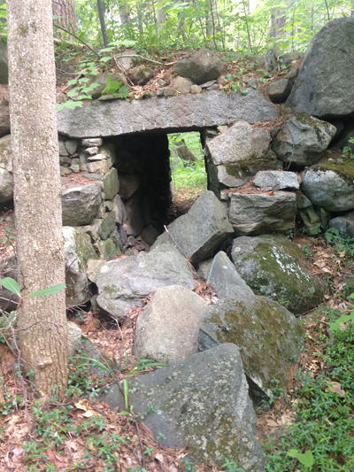
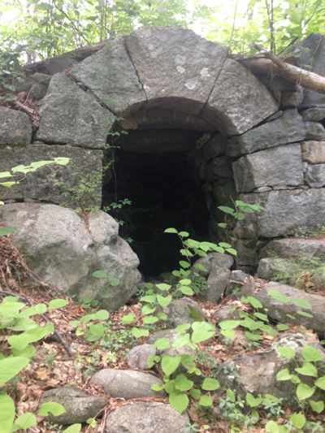
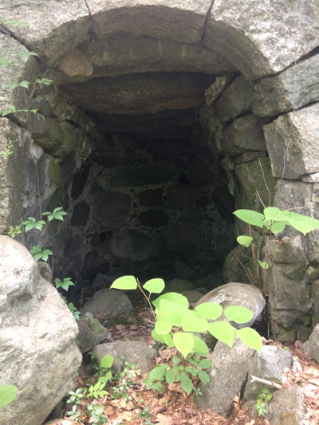

Turtle Mound
History:
By Terry Date, tdate@andovertownsman.com, Oct. 8 2015
A proposed subdivision of property near Haggetts Pond would transfer ownership of the land’s Turtle Mound archaeological site to the Andover Village Improvement Society, a stone-built site whose history is entwined in mystery.
At the heart of the mystery at 7 Lakeside Circle is the origin of the rocky mound, said to be shaped like a turtle when seen from above. Unseen from above are the tunnels and chambers that sit within it.
Longstanding questions remain: Who built the Turtle Mound? When? And why?
“It’s exciting,” said AVIS trustee Susan Stott. “I have heard people talking about the Turtle Mound and thought of it as a pile of dirt. (Then) I visited it a couple months ago and saw these rocks.”
The site’s origins remain in question but not the work a previous owner in the 19th century who clearly did rock work there and displayed artifacts nearby creating an attraction for paying customers.
Over the years, the Turtle Mound has been studied by amateur and professional archaeologists, by the University of Hawaii and the Canadian government, according to files at the Andover Historical Society.
Frank Glynn, who became the chief archaeologist for the New England Antiquities Research Association, investigated the Andover Turtle Mound in 1951. His report on the investigation was not published in his lifetime.
It refers to the site as a cairn burial site, and implies that it was an ancient, Western European neolithic burial site, according to the NEARA article when it published Glynn’s report in 1969, a year after his death.
NEARA’s then chief archaeologist found Glynn’s report in his files after his death.
The report states the site’s stones range from cobbles to three tons.
Layers in his digging revealed artifacts including serrated points, a javelin, and what appeared to be bone fragments as well a layer of carbon.
The Turtle Mound has periodically poked its head into the public view over the past 100 years, surfacing as news stories about its origins or proposed destruction to make room for building or road construction.
The latest chapter is slated to unfold on Oct. 13, when the Planning Board will continue discussions on the subdivision.
The proposal calls for subdividing the 2.86-acre parcel into two lots. The owners are Kevin and Denise McCarthy, brother and sister.
The new lot would be accessed by a created right-of-way to be owned by AVIS, with the McCarthys retaining an easement to allow them rights in the right of way, according to Planning Board documents.
UPDATE: On November 12th, 2015 the Planning Board approved the subdivision that transfers ownership of the land's Turtle Mound archaelogical site to AVIS.
Kevin McCarthy said in an interview that he played in the Turtle Mound as a kid
AVIS, a nonprofit land trust, looks forward to preserving the site and opening it to the public, Stott says.
AVIS members have begun to review research on the site, in case the property is conveyed to the land trust.
AVIS will clear away the overgrown vegetation and make it accessible to the public.
“We will hope to open it up so it will be an easy place to visit,” she said.
A 2008 report on Turtle Mound, in the historical society’s file, author by Sarah Sycz says, “The fact of the matter is that the area known as Turtle Mound is a mystery, possibly made up of stones placed there by ancient peoples or people within the last few hundred years.”
The society’s director, Elaine Clements, says current thought about the site holds that it was probably a Native American structure, originally, and has been altered by others over time.
Still, the final word remains, and therein lies the mystery.
Turtle Mound Images:



Size:
0.8 Acres
Location:
Off Lakeside Circle
Warden Information:
Ken Doran
ken.doran451@gmail.com
(978) 302-5259